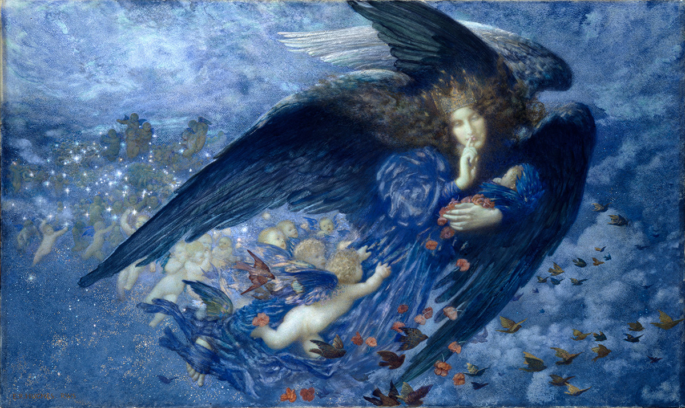

作品名 「星の子を連れた夜の女王」
花言葉
「眠り」「慰め」「 恋の予感」「思いやり」
「いたわり」「 陽気で優しい」
罌粟
「眠り」
春から初夏にかけて色鮮やかで美しい大きな花を咲かせるものが多く、ガーデニングや切り花用として人気がある花です。ケシの未熟果に傷をつけると出てくる乳液からアヘンが穫れ、それから精製されるモルヒネや、モルヒネを化学的に変化させたヘロインは麻薬に指定されています。入眠や麻痺の作用があることから、紀元前400年頃のギリシアでは麻酔薬や睡眠導入薬として用いられていました。また、ギリシア神話に登場する豊穣の女神デメテルとケシの結びつきは強く「眠り」という花言葉は、娘を奪われた悲しみから眠れなくなってしまったデメテルに、眠りの神ヒュプノスが、ケシの実を与えて眠らせたことにちなんでいます。
星の子を連れた夜の女王
エドワード・ロバート・ヒューズ
エドワード・ロバート・ヒューズはラファエル前派の後継者として、最後のロマン主義として活躍した画家による、幻想的な夜の光景。彼は精神病、死、愛、孤独などの深刻な人間的問題に対する抒情的な表現を特徴としている。ケシはその麻酔作用によって、眠りと結び付けられている。その眠りは、死に通じる眠り。天使が手にしたケシの花が、やがて訪れる死を暗示しています。
| 作品名 | 星の子を連れた夜の女王 |
| 作者 | エドワード・ロバート・ヒューズ |
| 制作年 | 1912年頃 |
| 種類 | {{}} |
| 寸法 | 127cm x 76.2cm |
| 所蔵 | バーミンガム美術館 |